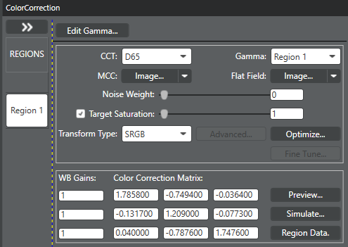
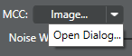
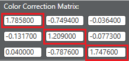
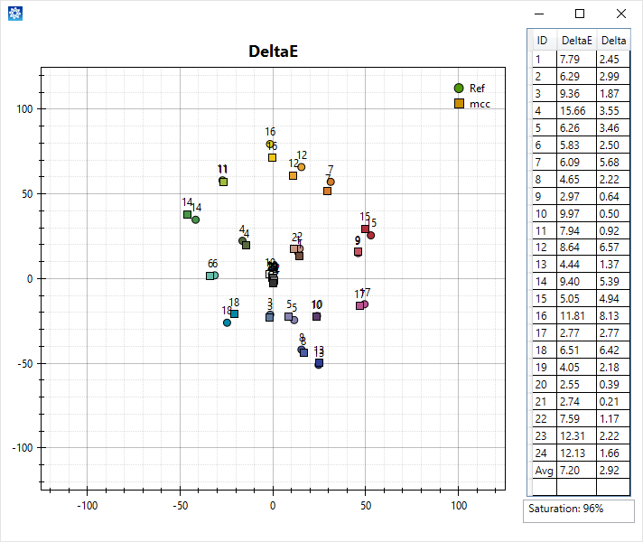

Use the Color Correction (CC)
module to minimize color reproduction inaccuracies and improve color fidelity.
- Set up Regions in the CC section of the Parameter Editor
to support the various CC matrices you need to tune. For example:
- Regions can be defined using the AEC Trigger to segregate tuning for
outdoor conditions vs indoor conditions.
- A region can be defined by the LED Index Trigger to allow for specific
CC tuning for LED flash.
- The gamma curve must be accurate prior to tuning the color correction matrix
(CCM). Any change to the gamma curve requires retuning the CC module.
-
On the Pipeline tab, click to open the Color Correction
window.

-
If it is necessary to modify the standard gamma curve or to
create a new gamma curve, click Edit
Gamma and make the changes before tuning the color correction
matrix.
-
In the Regions panel, click the region that you want to
tune.
-
In the CCT field, select
the color temperature you want to tune.
-
In the Gamma field,
select the applicable gamma curve. The gamma curve must be accurate before
continuing with the CCM optimization.
-
Color correction uses the SRGB color transform unless
you select another Transform Type from the list box.
Other options are AdobeRGB, BT2020, and Custom.

-
Load an MCC chart image that was captured under the appropriate
lighting condition.
-
To load a RAW image, in the MCC
field click the arrow and select Open Dialog....
Select the appropriate image.

-
To load a previously loaded image, click Image... and select an image saved to
the Images panel.
-
When the MCC image opens, select and set the grid markers. Drag the top-left MCC grid
marker to the center of the top-left color patch and drag the
bottom-right MCC grid marker to the center of the bottom-right color
patch so that all of the grid markers align within the color patches of
the MCC chart image. Close the window.
If the image is taken with a fisheye lens, hold the Ctrl Key (or Shift
Key) while moving the markers.
-
(Optional) Load a flat field image that was captured under the
appropriate lighting condition.
-
To load a RAW image, in the Flat
Field field click the arrow and select Open
Dialog.... Select the appropriate image.
-
To load a previously loaded flat field image, click
Image...and select an image
saved to the Images panel.
-
Click Optimize.
-
Examine the three diagonal values of the color correction
matrix to see how they changed as a result of the optimization..

For tuning purposes, only the highest value of the three
values matters. In this example, the highest value is the bottom-right value. A
higher noise weight value produces lower diagonal parameters in the color
correction matrix. For the diagonal parameters, higher values indicate higher
color saturation and increased noise. The ideal range for the highest diagonal
value is 1.8 to 3.
-
Open the image again and select > DeltaE. When the Illuminant Selection dialog
opens, select the appropriate illuminant. The DeltaE plot opens and shows the
changes made by the optimization.

-
If adjustments are necessary, drag the
Noise weight slider to change the
balance between color reproduction and noise reduction.
The noise weight setting determines how much significance is
given to noise. If the slider is set to 0, color reproduction is given full
priority, with no consideration or weight given to noise. Moving the slider to
the right minimizes noise, but sacrifices color reproduction.
-
If saturation changes are needed, mark the Target saturation check box and drag the slider
to change the saturation level.
The saturation level is not normally adjusted, but use this method to increase
saturation resulting from an increase in noise weight.
-
Click Optimize.
Continue adjusting noise weight and saturation, and clicking Optimize until the highest diagonal value in
the CCM is in the ideal range.
-
To run a full simulation using the new
values, click Simulate. A simulated
image appears. If the simulated image is acceptable, continue to the next step.
If not, repeat the preceding steps.
To run a faster simulation, click Preview. This type of
simulation uses a loaded YUV or JPEG file.
-
Click to save the settings for this Region/CCT.
-
Repeat this process for each remaining
CCT in this Region.
-
Repeat this process for each
Region.